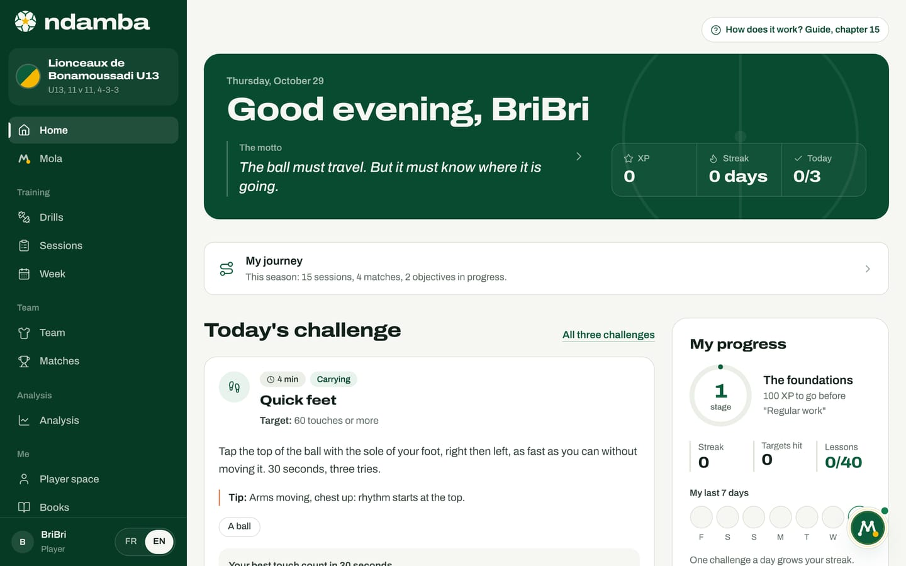
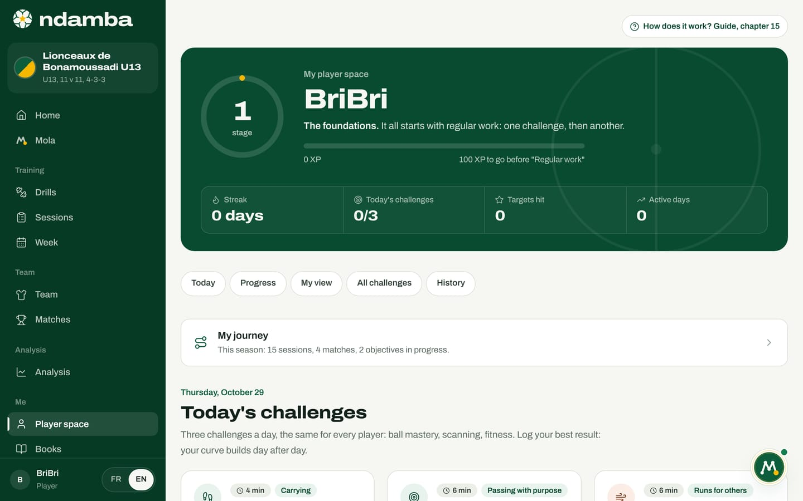
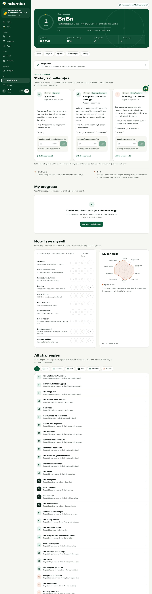
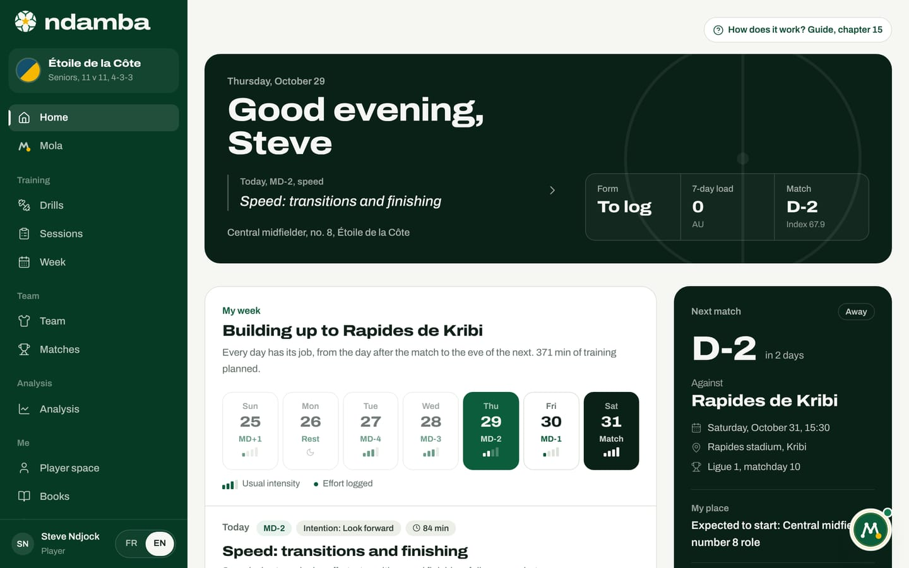
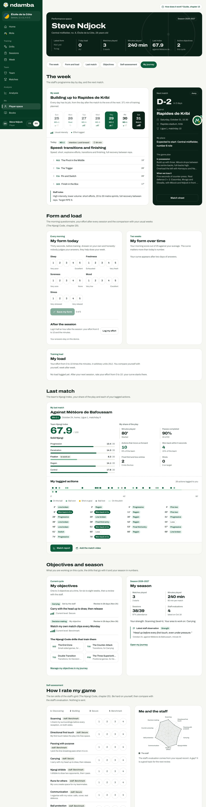
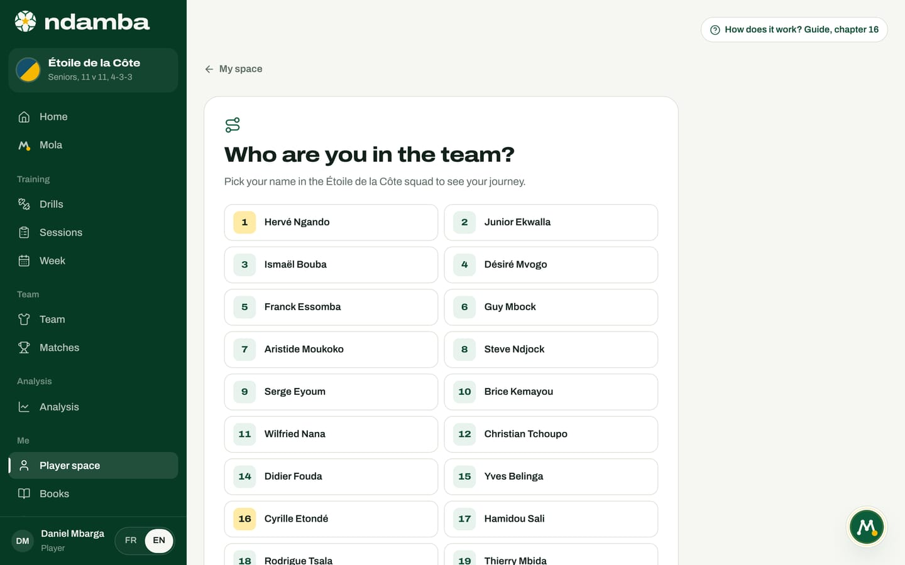

The player space
Today’s challenges, stages and streaks for young players; the week, form, load and last match for players aged 16 and over. And how to link your profile to your record in the squad.
10 min read
Many African players improve on their own: in a yard, against the wall of a house, with a ball and two bottles for cones. That time matters as much as club training, yet nobody sees it and nobody guides it. The player space gives it a shape: a precise challenge, a target in numbers, a result written down, a curve that climbs. And it grows with the player: a ten-year-old finds challenges and stages there, a twenty-eight-year-old midfielder finds his match week, his morning form and his load. Both speak the language of The Njangi Code.
Two spaces, depending on age
You open the player space from the menu, under Me, then Player space. The Home page of a player profile changes too. Ndamba picks the version from the player’s age, which it reads in this order: the birth year on their record in the squad, then the age group of their profile (U13, U17, Seniors, Pro), then the age group of their team.
| Player’s age | Home and player space | Notebook |
|---|---|---|
| Under 16 | The youth space: today’s challenges, XP, stages, streak, Ball Lessons | My Njangi notebook |
| 16 and over (U17, U19, U21, seniors, pros) | The performance space: week, form, load, last match, objectives | My player journal |
A parent always keeps their child’s youth space (chapter 17). A coach who opens the player space sees the version that matches their team’s age, as a preview.
A young player’s home


A young player’s home reads from top to bottom, like a day.
- At the top, the greeting with their first name, the date and a rotating line: The motto, today’s Ball Lesson, then Our mantra. The arrow to the right of the line moves to the next one. Alongside, three figures: XP, Streak and Today (how many of the day’s three challenges are done).
- The My journey card sums up the season in one line, for example "This season: 15 sessions, 4 matches, 2 objectives in progress." It opens the journey (chapter 16).
- Today’s challenge shows the first challenge, open and ready to log, with the other two below. The All three challenges link leads to the player space.
- The My progress card gives the stage, what is left before the next one, the streak, Targets hit, the Lessons understood out of 40, and My last 7 days (a ticked circle for each day with a challenge). The My player space button opens the full space.
- Lesson of the day shows a page from BriBri’s notebook with its diagram, which plays as an animation (chapter 16).
- On the right: The novel, the Next match with a little ritual ("The match is in 2 days: pack your bag and go to bed early the night before."), and My Njangi notebook with the last page written.
Without a team, a Do you play for a team? card offers Add my team. The challenges work without a team too.
Today’s challenges


The youth space opens with the stage in a ring, its name (The foundations to begin with) and the XP bar. Below come four figures: Streak, Today’s challenges, Targets hit and Active days. A row of shortcuts jumps to the sections of the page: Today, Progress, My view, All challenges, History.
Every day, Today’s challenges offers three challenges, the same for every player on the same date: one for ball mastery or carrying, one against the wall, for scanning or for finishing, and one for fitness. They come from a library of 32 challenges you can do alone, against a wall or with a few cones. Each one trains one of the ten skills of The Njangi Code grid and links to a Ball Lesson: Ten juggles with Mami’s ball takes up the brothers’ ritual before a big match.
To do a challenge and log it:
- Read the card: the time (for example 4 min), the skill it trains, and the Target ("60 touches or more").
- Tap How to do it and log if the card is closed. You see the instructions, the Tip, and the kit: A ball, A wall, Some cones, A partner or Some room. Fitness challenges always add Water.
- Do the challenge, then type your best result in the field, under the challenge’s question ("Your best touch count in 30 seconds").
- Tap Log. The XP you won appears (for example +25 XP), and the card says "Today: 60 touches, target reached".
XP is worked out automatically from the results you log: 10 XP for doing a challenge, 10 more if you reach the target, and a 5 XP bonus for a challenge of the day. Each challenge pays once a day: if you do it again, your best result counts, and a second try only adds the 10 target XP if you finally reach the target. Your stage goes up on its own.
| Stage | Name | From |
|---|---|---|
| 1 | The foundations | 0 XP |
| 2 | Regular work | 100 XP |
| 3 | The heart | 250 XP |
| 4 | The reason | 450 XP |
| 5 | The eyes | 700 XP |
| 6 | The map | 1,000 XP |
| 7 | The breath | 1,400 XP |
| 8 | The complete Njangi | 2,000 XP |
The names follow the journey of the novel: regular work first, then the five pieces of the Njangi. When a player moves up, a Stage 3 reached banner shows for a few seconds. The Streak counts the days in a row with at least one challenge; it holds until the end of the following day, then drops back to zero.
Progress, records and history
The My progress section appears with the first logged result. It holds three blocks:
- XP over the last 14 days: one bar per day, today in red earth.
- My curve: pick a challenge and see your best results against the target line, with your Record (for a timed slalom, lower is better).
- My records: the challenges you do most, with your best result and a star when the target is reached.
My history lists your latest results. A typo is fixed with the bin icon, and Undo stays on offer for a few seconds. The page says it plainly: "Everything stays on this device: nothing is sent over the internet."
My view: rating yourself
The How I see myself section asks the player where they stand on the ten skills of the grid: scanning, directional first touch, passing with purpose, carrying, the njangi dribble, runs for others, communication, ball protection, counter-pressing and decision making. Each line has a simple sentence ("I look over my shoulder before I receive.") and four buttons: 1 "I’m discovering it", 2 "I’m getting better", 3 "I’ve got it", 4 "I teach it to others".
The My ten skills radar draws itself as you go. If the coach has evaluated the player in the squad, and the profile is linked to the record (by the same name or through My journey), a second shape appears, My coach’s view, with this advice: "If you don’t see it the same way, talk about it after training." This self-assessment never leaves the device ("Kept on this device only."); it is part of the backup exported from Settings, and Erase everything deletes it.
Further down, All challenges lists the 32 challenges with filters: All, Ball, Dribbling, Wall, Eyes, Finishing, Fitness. Each line opens in place, with the same form for logging. At the bottom of the page, two doors: The Ball Lessons and My Njangi notebook (chapter 16).


The performance space, from 16
From 16, the player trains around the match week. Their space follows chapter 29 of The Njangi Code: a form questionnaire every morning, the effort felt after every session, and a comparison with their own weeks, never with a teammate.


The home of a player aged 16 and over opens on a dark band: the greeting, the role of the day in the week ("Today, MD-2, speed" and the session title), their position, number and club, and three figures: Form (out of 25, or To log), 7-day load in AU, and Match (D-2, with the Index of the last match). Then come the week, the next match, form, load, the last match, objectives and the season. The performance space (Player space) shows these cards in full. Its Performance space header holds six figures (form, load, matches played, minutes played, last Index, active objectives) and shortcuts: The week, Form and load, Last match, Objectives, Self-assessment and My journey.
The week. The My week card shows seven days: the ones leading to the next match when it falls within six days, otherwise Monday to Sunday. Each day carries its role (MD+1, MD-4, Rest, Match), bars for Usual intensity and a dot when the effort was logged. Tap a day to see the staff’s session, its blocks minute by minute with each drill’s code, why that day exists in the week, and the Staff notes. The Next match card gives the countdown, the venue, My place in the planned line-up ("Expected to start: Central midfielder, number 8 role"), The game plan (In possession, When we lose it) and the Match sheet button.
Form and load. Every morning, before training:
- In My form today, rate your Sleep, Freshness, Soreness, Mood and Stress from 1 to 5.
- Tap Save my form. Your score out of 25 appears with its band: Fresh (20 and over), Fair (15 to 19) or Below par. After five days of answers, the card compares it with your average over the last 28 days.
- About thirty minutes after the session, under After the session, answer "How hard was the session?" from 0 to 10, check the Duration (minutes), then tap Save my effort. A session on your own or a run is logged with Log a session on my own.
Effort times minutes gives the load of the session, in arbitrary units (AU). The My load card adds up the Last 7 days and compares them with the Average of the 3 weeks before: more than 30% above is a Load spike, with the advice to talk to the staff; more than 30% below is a Lighter week; in between, a Steady load. If your last three form scores are clearly below your average, a warning appears: "Your form has dropped for three days". Your answers stay on the device.
Last match. The My last match card gives the Team Njangi Index and its five sub-indices, then My share of the play: minutes played, passes completed, Actions that move us forward and balls won back within five seconds, each with its share of the team total. In the performance space, every action tagged to you sits on a line of the match, minute by minute. The buttons lead to the Match report and the video.
Objectives and season. My objectives lists the objectives of the cycle (one to three, for six to eight weeks), who set them (Set by the staff or My objective), the time left before the review and, in the performance space, The Njangi Code drills that train them. My season gives matches, minutes, attendance and the Latest staff observation. Finally, How I rate my game repeats the self-assessment on the staff’s grid (Discovering, Building, Secure, Benchmark), next to what the staff recorded.


Who are you in the team? Linking your profile to your record
Minutes, objectives, staff observations and the last match all come from the player’s record in the squad. So Ndamba needs to know which record is yours. If your profile carries the same name as your record, the link is made on its own. Otherwise, the performance space shows "Your squad record is not linked yet." with the Link my profile button; for younger players, the My journey card leads to the same screen.
- Tap Link my profile, or the My journey card.
- The Who are you in the team? screen shows your team’s squad, each player with their number.
- Tap your name. The journey opens, and your home, player space and objectives fill up with your data.


A parent sees the same screen under the heading Which record is your child’s? (chapter 17). A staff member who opens the performance space sees Staff preview. and Pick a player, to see it the way one of their players will.